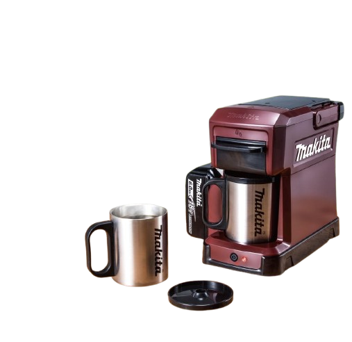

Serie LXT 18V
Batería LXT de 18 V (batería no incluida)

No necesita filtros descartables para preparar café durante la jornada.
Pensada para talleres, obras y espacios de trabajo sin depender de enchufes.
Depósito de agua de 240 ml con taza de acero inoxidable incluida.
Compatible con baterías Makita LXT 18 V y CXT 12 V máx.
Esta cafetera robusta está diseñada para ofrecer una taza de café recién hecho, resistiendo las exigencias de un entorno de trabajo intenso.
Es una cafetera de goteo portátil, duradera y a batería, compatible con el resto de herramientas Makita.